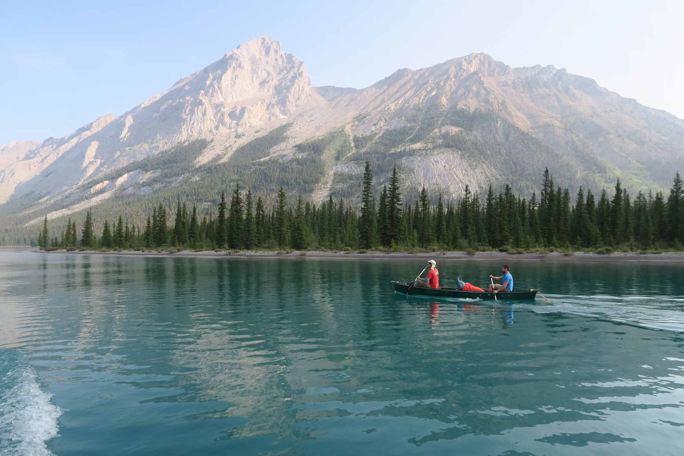

The Joy of Canoeing: An Escape into Nature
Canoeing is not just a sport; it’s an experience that draws you closer to nature, offering tranquility and adventure in equal measure. Whether you’re gliding across a calm lake or navigating the gentle currents of a winding river, canoeing can rejuvenate the body and enrich the soul.
The Basics of Canoeing
Before embarking on your paddling journey, it’s essential to understand the basics. A canoe is a narrow vessel typically propelled by paddles. It can accommodate anywhere from one to multiple individuals, making it a perfect activity for solo adventurers or group outings.
Choosing Your Canoe:
There are various types of canoes, including recreational, touring, and whitewater canoes. Selecting the right one depends on your planned activities and skill level.
Paddling Technique:
Proper paddling technique is crucial for efficiency and enjoyment. To paddle effectively:
1. Grip the paddle with both hands, keeping your elbows slightly bent.
2. Dip the blade into the water at the front and pull it back alongside the canoe, maintaining a smooth motion.
3. Switch sides to keep your course straight.
Finding the Right Location
Choosing the right location can make or break your canoeing experience. Look for serene lakes, picturesque rivers, or coastal waters that match your skill level. Parks often offer rentals and guided tours, making it easier for beginners to get started.
The Benefits of Canoeing
1. Physical Fitness: Canoeing engages your core, arms, and legs, providing a full-body workout.
2. Mental Clarity: Being out on the water can reduce stress and improve mental well-being. The rhythmic movement of paddling combined with the sounds of nature creates a meditative atmosphere.
3. Connection with Nature: Encounter wildlife, pristine landscapes, and beautiful sunsets that you might miss on land.
Safety First
As with any outdoor activity, safety should be your top priority. Always wear a life jacket and check weather conditions before heading out. Inform someone of your plans and consider carrying a whistle, first-aid kit, and a waterproof bag for essentials.
Conclusion
Canoeing is an incredible way to explore the beauty of the outdoors while enjoying physical activity and serenity. Whether you're paddling alone or with loved ones, the experience fosters connections—both with nature and the people around you. So grab a paddle, find a serene spot, and let the water carry you into an unforgettable adventure!
